Siradj2016
Wearable membantu pelari memantau aktivitas fisik secara praktis dan mandiri untuk motivasi diri.
Celah: akurasi perangkat konsumer rendah — MAPE 1–42% (langkah) dan 15–44% (kalori).
An AIoT-Driven Upper-Arm Wearable for Real-Time Physiological Monitoring and Running Performance
Armband lengan atas yang memadukan sensor PPG, IMU, dan mikrokontroler ESP32. Posisinya menstabilkan sensor secara mekanis untuk meredam motion artifact, lalu AI mengolah sinyalnya menjadi Readiness Score dan peringatan dini — sebelum pelari cedera.
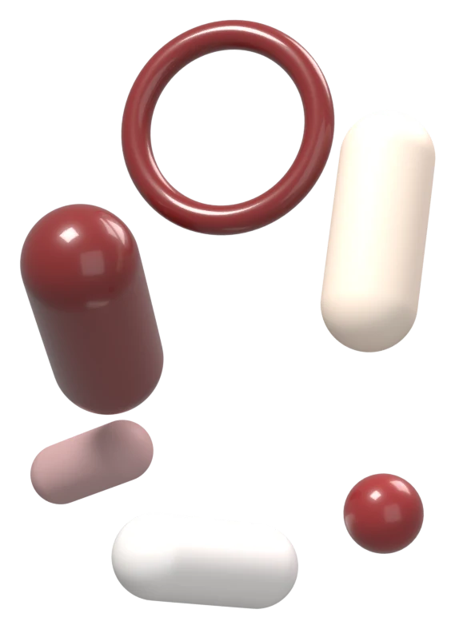
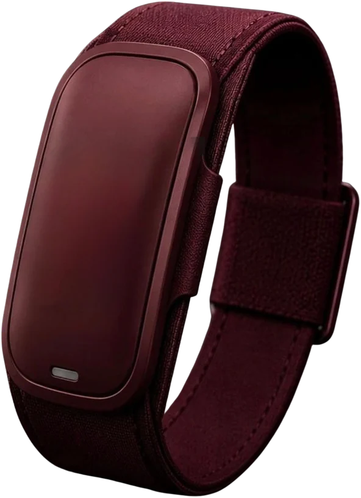
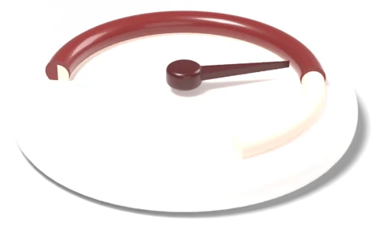
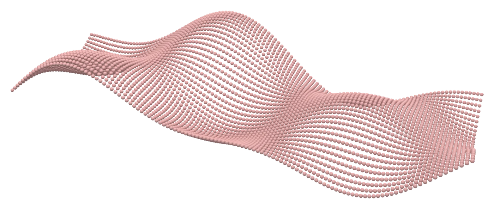
Krisis gaya hidup sedentari mendorong banyak orang mulai berlari — sering kali tanpa pemantauan yang bisa dipercaya.
Penduduk Indonesia usia ≥10 tahun yang belum memenuhi rekomendasi aktivitas fisik. Kurang gerak adalah salah satu faktor risiko utama kematian dini di dunia — bila dibiarkan, kebugaran dan produktivitas ikut menurun.
Cemas berlebihan pada metrik digital di layar jam.
Sinyal bahaya tubuh — nyeri, lelah ekstrem — diabaikan demi target.
Memaksa tubuh melewati batas fisik, terdorong FoMO.
MAPE perangkat konsumer 1–42% pada hitung langkah.
Trends in Runner Injuries. Popularitas lari di masyarakat urban kerap dibarengi tekanan gaya hidup, komodifikasi, dan perilaku Fear of Missing Out. Kecenderungan memaksa tubuh melewati batas (overtraining) menggeser pola cedera ke jaringan lunak dan tendon yang lebih berat — Achilles tendinopathy, strain betis, cedera hamstring dan quadriceps, Iliotibial Band Syndrome (ITBS), hingga robekan meniskus lutut.
Wearable membantu pelari memantau aktivitas fisik secara praktis dan mandiri untuk motivasi diri.
Celah: akurasi perangkat konsumer rendah — MAPE 1–42% (langkah) dan 15–44% (kalori).
Smartwatch memungkinkan pelacakan metrik fisiologis berkelanjutan dan mendukung intervensi self-monitoring.
Celah: reliabilitas dan validitas antarperangkat tidak konsisten, terutama pada intensitas tinggi.
Studi penempatan anatomis: perangkat di pergelangan praktis untuk memantau detak jantung sehari-hari.
Celah: PPG di pergelangan sangat rentan motion artifact; akurasinya anjlok saat lari intensitas tinggi.
IMU + machine learning mampu mengestimasi gaya reaksi tanah dan kinematika lari dengan presisi tinggi.
Celah: masih kelas laboratorium, belum terintegrasi di wearable untuk pelari sehari-hari.
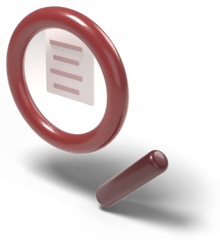
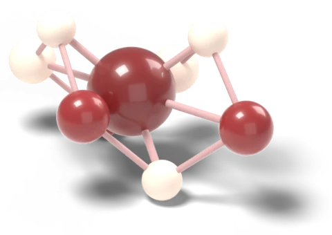
Ekosistem cerdas yang memadukan pembacaan sensor fisik (IoT) dari perangkat dengan kecerdasan buatan untuk mengolah sinyal fisiologis secara terus-menerus.
Sistem proteksi dua lapis: peringatan dikirim bersamaan kepada pengguna dan pengawas untuk mencegah kolaps.
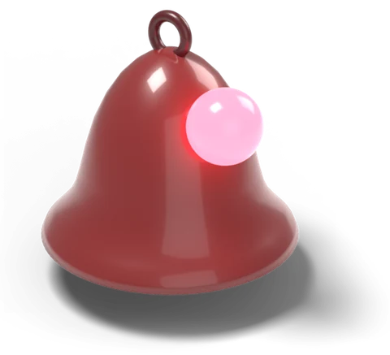
Peringatan proaktif seketika saat pelari mulai memaksa tubuhnya melewati batas aman.
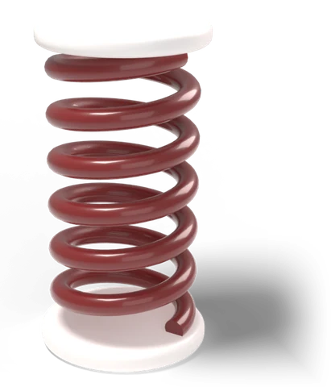
Pelacakan kinematika IMU yang mengukur stres mekanis pada otot dan tendon untuk mencegah Achilles tendinopathy & ITBS.
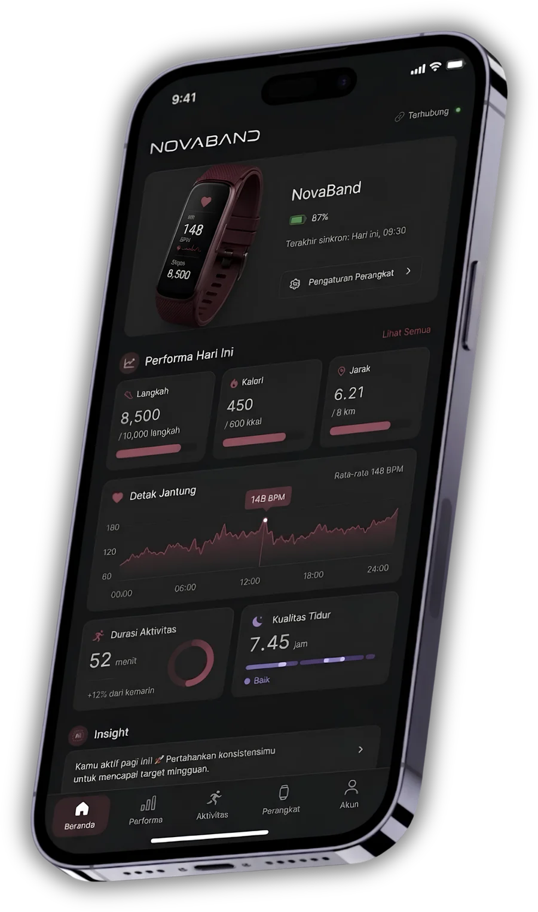
Photoplethysmography membaca perubahan volume darah di bawah kulit — setiap detak mengubah seberapa banyak cahaya yang dipantulkan kembali.
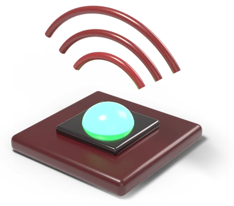
LED hijau menyinari kulit lengan atas.
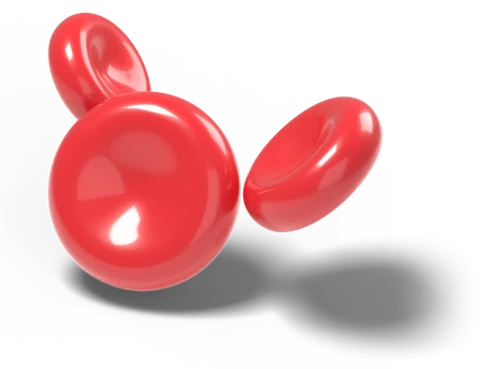
Volume darah berubah tiap detak, menyerap cahaya.
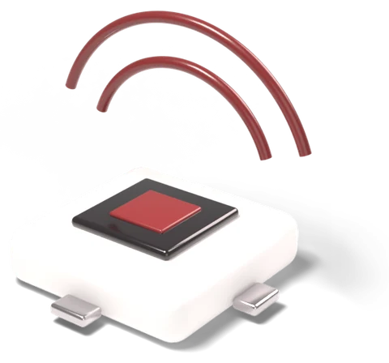
Menangkap cahaya yang dipantulkan kembali.
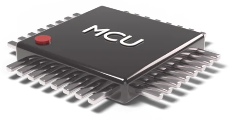
ESP32 menyaring sinyal dengan FFT di perangkat.
Menjadi BPM real-time dan Readiness Score.
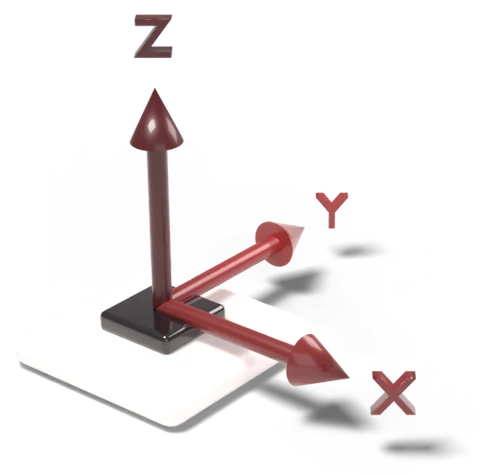
Mendeteksi perubahan kecepatan gerak yang drastis untuk mengenali jatuh mendadak atau kolaps fisik.
Jatuh & kolaps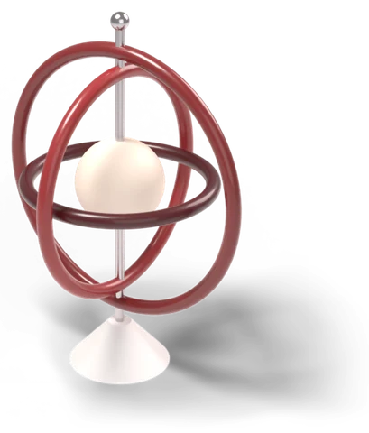
Memantau postur dan kemiringan tubuh untuk mendeteksi hilang keseimbangan, pusing, atau gerakan tidak stabil.
Postur & keseimbangan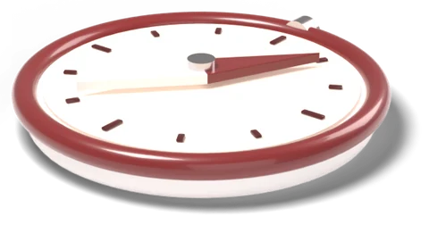
Menentukan orientasi tubuh secara presisi untuk membantu pelacakan spasial dalam situasi darurat.
Orientasi & lokasiLengan atas jauh dari titik ayun terbesar saat berlari, sehingga sensor tetap menempel rapat di kulit. Putar modelnya untuk melihat dari segala sisi.
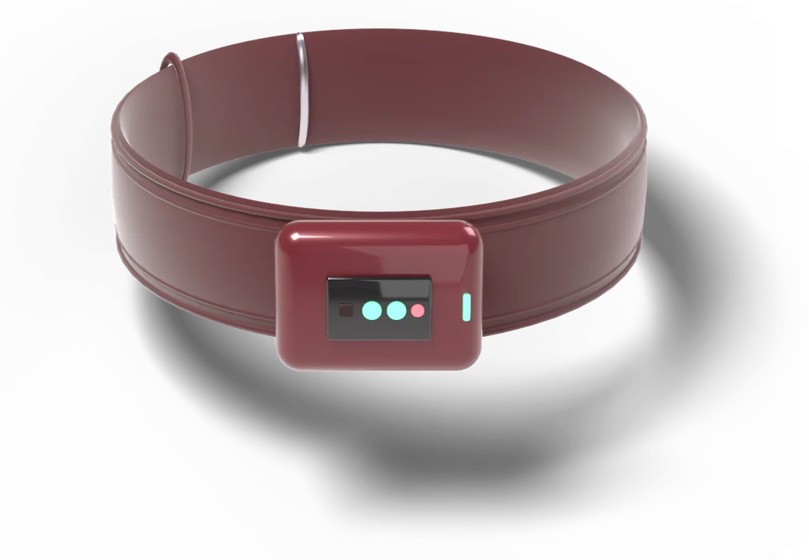
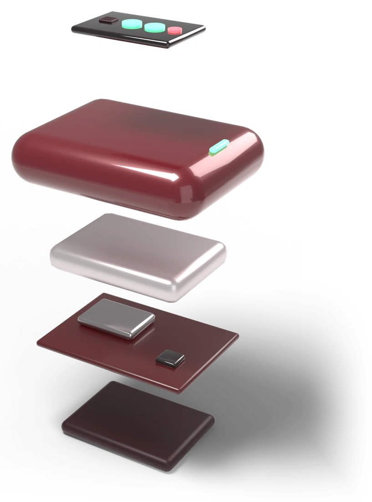
Jendela optik + LED PPG Casing polimer 3D Baterai Li-Po PCB · ESP32 · IMU Sensor pod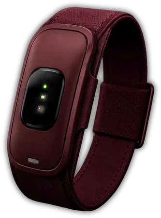
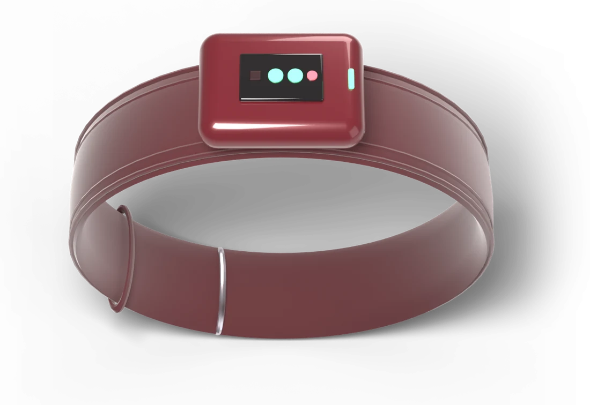
Data dari band dikirim lewat Bluetooth ke aplikasi, lalu secara berkala ke dashboard komunitas untuk pengawas event.
BPM dan zona latihan dari PPG yang sudah disaring.
Satu skor kesiapan harian dari fusi PPG dan IMU.
Alert ketika tubuh mendekati batas aman.
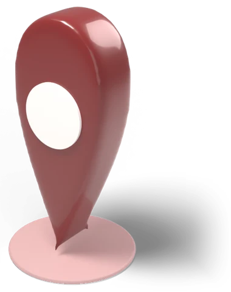
Peta kelompok pelari untuk mencegah kelelahan ekstrem massal.
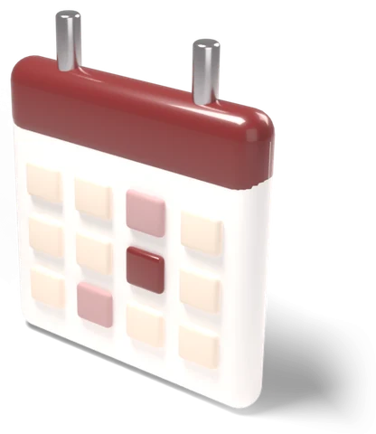
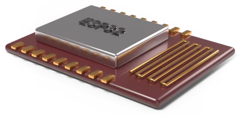
Rata-rata besarnya error pembacaan sensor. Semakin kecil, semakin akurat — dan pembacaannya tetap stabil bahkan saat aktivitas intensitas tinggi.
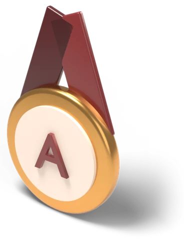
Kategori Acceptable dengan Grade A: Nova-Band dinilai mudah digunakan dan nyaman oleh 60 responden.
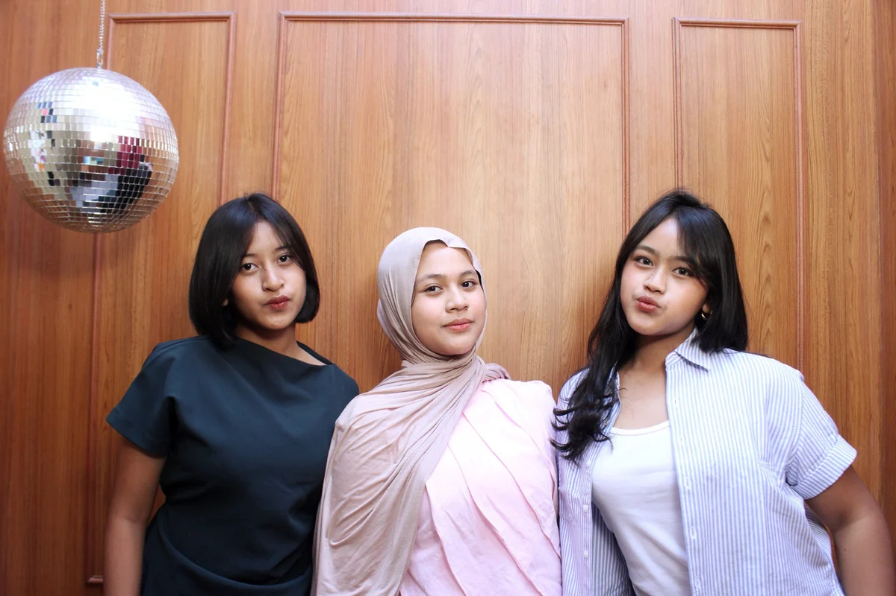
Sumber: data event lari 2025, hasil verifikasi tim.
Nilai dibaca dari grafik pada deck ISIF (satuan mengikuti deck). Revenue melampaui total cost sejak 2027.
Tim peneliti & pengembang
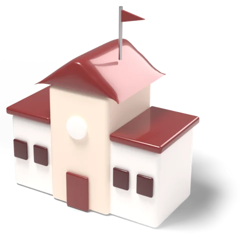
Sekolah mitra ISIF 2026
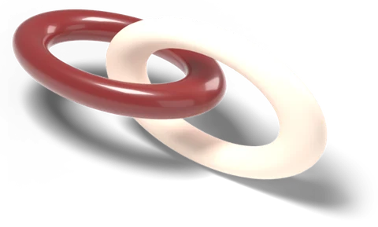
REKA Mersif · UNS · Mersif Academy · Enuma Technology
PPG (detak jantung) dan IMU (gerak tubuh) digerakkan ESP32 di lengan atas, mengumpulkan data fisiologis dan gerak secara bersamaan.
AI mengolah pola aktivitas dan respons fisiologis secara bersama-sama, real time, selama latihan.
Nova-Band menjadi inovasi wearable yang akurat, praktis, ergonomis, dan berbasis data untuk memantau performa pelari secara real-time.
Satu sesi di gym, dirender penuh dengan Blender Cycles: pelari di treadmill memakai purwarupa NovaBand di lengan atas, layarnya menjalankan firmware asli, tersambung ke aplikasi.
SMA Negeri 1 Surakarta · 2026
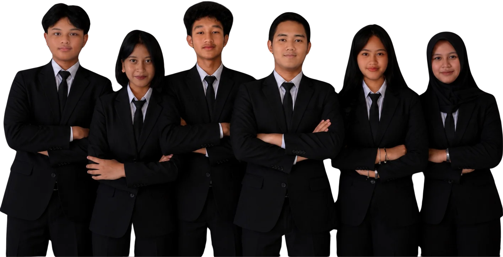
Streaming detak jantung, Readiness Score, peringatan dini, beban jaringan lunak, dan dashboard komunitas — dalam satu aplikasi demo.